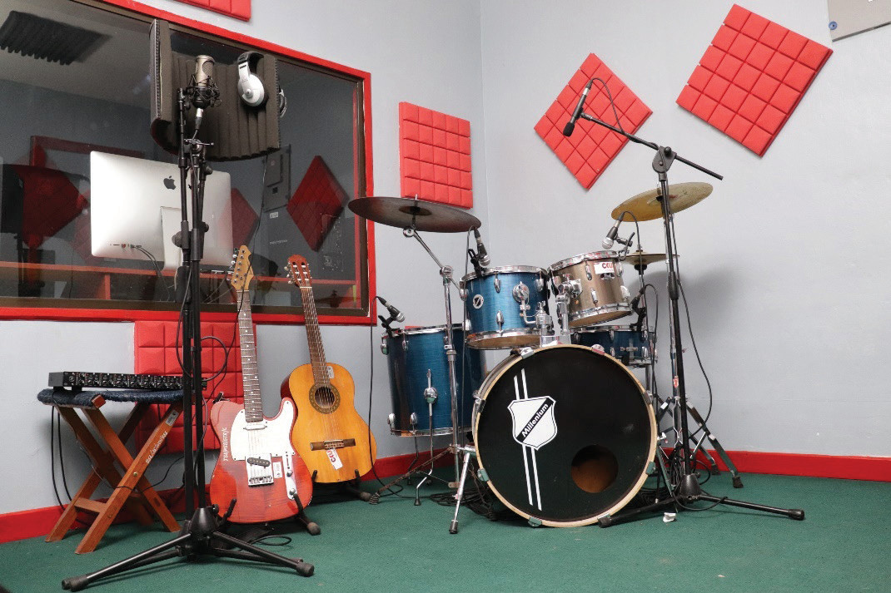
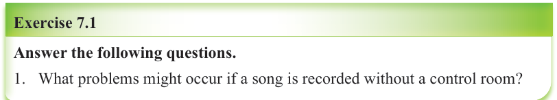

to stop unwanted sounds, like echoes or noise from outside, so the recording is clean and clear. Sometimes, more than one person can perform in the live room at the same time. Figure 7.2 shows an example of the live room in a music recording studio.

Note that, there is usually a large glass window between the control room and the live room. This window lets the producer see the performers and also helps with communication. The producer can give signs or instructions while the recording is happening.

Activity 7.1
Observe a music recording studio and take note of the features you can identify.

Exercise 7.1
Answer the following questions.
1.
What problems might occur if a song is recorded without a control room?